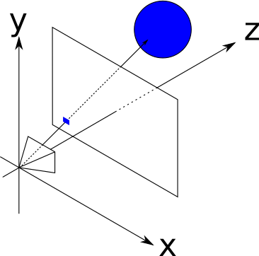
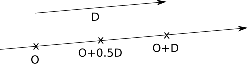

İşinleri İzlemek - Temel Fikir
Ray tracing, yani ışın izleme, bilgisayar grafiklerinde bir sahnedeki görüntüyü oluşturmak için kullanılan bir tekniktir. Bu teknik, bir kameradan sahnedeki her piksele doğru bir ışın (ray) göndererek çalışır. Pikselin rengi, bu ışının sahnedeki nesnelere çarpması ve bu çarpışmalar sonucunda elde edilen bilgiye dayanarak belirlenir.
Önceki bölümde her piksel için viewport (görüntü düzlemi) üzerindeki bir noktayı nasıl bulacağımızı öğrendik. Şimdi, kameradan bu noktaya doğru bir ışın göndererek o pikselin rengini nasıl belirleyeceğimizi inceleyeceğiz.

Vektör Kavramı
Vektör, büyüklüğü ve yönü olan bir niceliktir. Matematikte ve fizikte, bir vektör genellikle bir başlangıç noktası ve bir bitiş noktası arasında çizilen ok ile temsil edilir. Vektörler, konum, hız, kuvvet gibi fiziksel büyüklükleri ifade etmek için kullanılır.
- Skaler: Sadece büyüklükle ifade edilen niceliklerdir. Örneğin, sıcaklık, kütle, zaman gibi.
- Vektör: Hem büyüklük hem de yön ile ifade edilen niceliklerdir. Örneğin, hız, kuvvet gibi.
3B vektör gösterimi:
\[ \vec{v} = (v_x, v_y, v_z) \]Vektörler üzerinde çeşitli işlemler yapabiliriz:
- Vektör Toplama: İki vektör toplanarak yeni bir vektör elde edilir: \[ \vec{a} + \vec{b} = (a_x+b_x, a_y+b_y, a_z+b_z) \]
- Vektör Çıkarma: İki vektör çıkarılarak yeni bir vektör elde edilir: \[ \vec{a} - \vec{b} = (a_x-b_x, a_y-b_y, a_z-b_z) \]
- Skaler ile Çarpma: Bir vektör bir skalerle çarpılarak vektörün büyüklüğü değiştirilebilir: \[ t \cdot \vec{v} = (t \cdot v_x, t \cdot v_y, t \cdot v_z) \]
Örnek: Eğer \(\vec{v} = (2, 3, 4)\) ve \(t = 2\) ise, skaler çarpma sonucu \(2 \cdot \vec{v} = (4, 6, 8)\) olacaktır.
İşin Denklemi (The Ray Equation)
Bir işin, başlangıç noktası \(O\) ve yönü \(\vec{D}\) ile tanımlanır. Bu iki bileşen, işinin uzayda nasıl ilerlediğini belirler. İşin denklemi şu şekilde yazılır:
\[ P = O + t\vec{D} \]Burada \(P\) işin üzerindeki herhangi bir noktayı temsil ederken, \(t\) ise işin üzerinde ne kadar ilerlediğimizi belirten bir reel sayıdır. \(t\) değerine bağlı olarak işin üzerindeki farklı noktaları elde edebiliriz:
- \(t = 0\) ise \(P = O\) (başlangıç noktası)
- \(t = 1\) ise \(P = O + D\) (viewport noktası)
- \(t < 0\) ise kameranın arkası
- \(t > 0\) ise kameranın önü

Örneğin, kameradan çıkan bir işin, \(O = (0, 0, 0)\) ve \(\vec{D} = (0, 0, 1)\) ise ve \(t = 2\) değerini alıyorsa, işin üzerindeki nokta \(P = (0, 0, 2)\) olacaktır.
Nokta Çarpım (Dot Product)
İki vektörün nokta çarpımı, bu vektörlerin büyüklükleri ve aralarındaki açının kosinüsü ile çarpımıdır. Nokta çarpımının sonucu bir skalerdir (sayıdır), vektör değildir! Matematiksel olarak, iki vektör \(\vec{a}\) ve \(\vec{b}\) için nokta çarpımı şu şekilde tanımlanır:
\[ \langle \vec{a}, \vec{b} \rangle = a_x b_x + a_y b_y + a_z b_z \]Nokta çarpımının geometrik anlamı, iki vektörün ne kadar "aynı yönde" olduğunu ölçmesidir. Eğer iki vektör aynı yöne işaret ediyorsa, nokta çarpımları pozitif ve büyük olacaktır. Eğer tamamen zıt yönlerdeyseler, negatif olacaktır.
Bir vektörün uzunluğu ise, vektörün kendisiyle olan nokta çarpımının karekökü ile hesaplanır:
\[ |\vec{v}| = \sqrt{\langle \vec{v}, \vec{v} \rangle} \]Örnek: Vektörler \((1, 2, 3)\) ve \((4, 5, 6)\) için nokta çarpımı:
\[ (1, 2, 3) \cdot (4, 5, 6) = 1*4 + 2*5 + 3*6 = 4 + 10 + 18 = 32 \]Nokta çarpımı ayrıca dağıtma özelliğine sahiptir:
\[ \langle \vec{a} + \vec{b}, \vec{c} \rangle = \langle \vec{a}, \vec{c} \rangle + \langle \vec{b}, \vec{c} \rangle \]Küre Denklemi (The Sphere Equation)
Küre, sabit bir noktadan (merkez \(C\)) sabit uzaklıkta (yarıçap \(r\)) olan noktaların kümesidir. Matematiksel olarak, bir kürenin yüzeyindeki noktalar şu denklemi sağlar:
\[ |P - C| = r \]Burada \(P\) küre üzerindeki bir noktayı, \(C\) kürenin merkezini ve \(r\) kürenin yarıçapını temsil eder. Uzaklık, bir vektörün uzunluğu olarak tanımlanır:
\[ \sqrt{\langle P - C, P - C \rangle} = r \]Bu denklemin her iki tarafının karesini alarak daha basit bir hale getirebiliriz:
\[ \langle P - C, P - C \rangle = r^2 \]Bu, kürenin yüzeyinde bir nokta olup olmadığını belirlemek için kullanılır.

Raylib Uygulaması
Raylib kütüphanesi kullanarak, 3D ortamda ışın izleme kavramlarını görselleştiren bir uygulama geliştireceğiz. Bu uygulama, gerçek 3D küreler ve ışınlar kullanarak sahnede neler olduğunu anlamamıza yardımcı olacak.
Öne çıkan özellikler:
- Viewport, kamera ve ışın kavramları 3D olarak görselleştirilir.
- Gerçek 3D küreler (DrawSphere, DrawSphereWires) kullanılarak sahne oluşturulur.
- 3D uzayda viewport düzlemi (z=1) çizilir ve grid ile bölünür.
- RaySphereIntersect: Işın-küre kesişim fonksiyonu (kitaptaki formülün C implementasyonu)
- GetScreenToWorldRay: Fare konumundan 3D ışın hesaplama
- Space tuşu ile viewport üzerinden NxN ışın gridi gönderilir.
- DrawLine3D: 3D çizgilerle ışınlar gösterilir.
- Işınlar en yakın küreye çarptığında o kürenin rengiyle boyanır.
- Camera3D ve CAMERA_ORBITAL ile sahne etrafında dönme.
#include "raylib.h"
#include "raymath.h"
#include <math.h>
#include <float.h>
/*
* Ornek 03 - 3D Viewport ve Isin Gorsellestirme
*
* 3D sahne icinde viewport, kamera ve isin kavramlarini gorsellestir.
* Fare ile kamerayi dondurabilir, Space tusuna basarak viewport
* uzerinden isinlar gonderilmesini izleyebilirsiniz.
* Gercek 3D kureler ve isinlar kullanilir.
*/
// Basit isin-kure kesisim testi (t dondurur, < 0 ise kesisim yok)
float RaySphereIntersect(Vector3 origin, Vector3 dir, Vector3 center, float radius)
{
Vector3 oc = Vector3Subtract(origin, center);
float a = Vector3DotProduct(dir, dir);
float b = 2.0f * Vector3DotProduct(oc, dir);
float c = Vector3DotProduct(oc, oc) - radius * radius;
float disc = b * b - 4.0f * a * c;
if (disc < 0.0f) return -1.0f;
float t = (-b - sqrtf(disc)) / (2.0f * a);
if (t < 0.001f) t = (-b + sqrtf(disc)) / (2.0f * a);
return (t > 0.001f) ? t : -1.0f;
}
int main(void)
{
const int screenWidth = 900;
const int screenHeight = 700;
InitWindow(screenWidth, screenHeight, "Ornek 03 - 3D Viewport ve Isin Gorsellestirme");
SetTargetFPS(60);
// 3D Kamera
Camera3D camera = { 0 };
camera.position = (Vector3){ 0.0f, 2.0f, -5.0f };
camera.target = (Vector3){ 0.0f, 0.0f, 3.0f };
camera.up = (Vector3){ 0.0f, 1.0f, 0.0f };
camera.fovy = 53.0f;
camera.projection = CAMERA_PERSPECTIVE;
// Sahne: kitaptaki 3 kure (gercek 3D)
Vector3 sPos[3] = {
{ 0.0f, -1.0f, 3.0f },
{ 2.0f, 0.0f, 4.0f },
{-2.0f, 0.0f, 4.0f },
};
float sRad[3] = { 1.0f, 1.0f, 1.0f };
Color sCol[3] = { RED, BLUE, GREEN };
const char *sName[3] = { "Kirmizi", "Mavi", "Yesil" };
// Viewport gorunurlugu: kamera origin'den d=1 mesafede 1x1'lik duzlem
bool showRays = false;
int rayGridN = 8; // NxN isin gridi
while (!WindowShouldClose())
{
UpdateCamera(&camera, CAMERA_ORBITAL);
if (IsKeyPressed(KEY_SPACE)) showRays = !showRays;
if (IsKeyPressed(KEY_UP) && rayGridN < 32) rayGridN += 2;
if (IsKeyPressed(KEY_DOWN) && rayGridN > 2) rayGridN -= 2;
// Fare ile isin gonderme: ekrandaki fare konumundan 3D isini hesapla
Vector2 mouse = GetMousePosition();
Ray mouseRay = GetScreenToWorldRay(mouse, camera);
int hitIdx = -1;
float hitT = FLT_MAX;
for (int i = 0; i < 3; i++) {
float t = RaySphereIntersect(mouseRay.position, mouseRay.direction,
sPos[i], sRad[i]);
if (t > 0 && t < hitT) { hitT = t; hitIdx = i; }
}
BeginDrawing();
ClearBackground(RAYWHITE);
BeginMode3D(camera);
// Zemin izgarasi
DrawGrid(10, 1.0f);
// Koordinat eksenleri
DrawLine3D((Vector3){0,0,0}, (Vector3){2,0,0}, RED);
DrawLine3D((Vector3){0,0,0}, (Vector3){0,2,0}, GREEN);
DrawLine3D((Vector3){0,0,0}, (Vector3){0,0,2}, BLUE);
// Kureler (gercek 3D)
for (int i = 0; i < 3; i++) {
DrawSphere(sPos[i], sRad[i], Fade(sCol[i], 0.85f));
DrawSphereWires(sPos[i], sRad[i], 12, 12, Fade(sCol[i], 0.4f));
}
// Viewport duzlemini gorsellestir (z=1, 1x1 kare, orijin merkezli)
Vector3 vpCorners[4] = {
{-0.5f, 0.5f, 1.0f},
{ 0.5f, 0.5f, 1.0f},
{ 0.5f, -0.5f, 1.0f},
{-0.5f, -0.5f, 1.0f},
};
for (int i = 0; i < 4; i++)
DrawLine3D(vpCorners[i], vpCorners[(i+1)%4], DARKGRAY);
// Viewport grid
for (int i = 0; i <= rayGridN; i++) {
float u = -0.5f + (float)i / (float)rayGridN;
DrawLine3D((Vector3){u, -0.5f, 1.0f},
(Vector3){u, 0.5f, 1.0f}, Fade(GRAY, 0.2f));
DrawLine3D((Vector3){-0.5f, u, 1.0f},
(Vector3){ 0.5f, u, 1.0f}, Fade(GRAY, 0.2f));
}
// Kamera orijin noktasi
DrawSphere((Vector3){0,0,0}, 0.06f, DARKBLUE);
// Space'e basildiginda viewport uzerinden isinlar gonder
if (showRays) {
Vector3 O = {0, 0, 0};
for (int gx = 0; gx < rayGridN; gx++) {
for (int gy = 0; gy < rayGridN; gy++) {
float vx = -0.5f + ((float)gx + 0.5f) / (float)rayGridN;
float vy = -0.5f + ((float)gy + 0.5f) / (float)rayGridN;
Vector3 vpPoint = {vx, vy, 1.0f};
Vector3 D = Vector3Normalize(vpPoint);
// Isini en yakin kureye kadar veya 15 birim uzaga ciz
float bestT = 15.0f;
Color rayColor = Fade(ORANGE, 0.3f);
for (int s = 0; s < 3; s++) {
float t = RaySphereIntersect(O, D, sPos[s], sRad[s]);
if (t > 0 && t < bestT) {
bestT = t;
rayColor = Fade(sCol[s], 0.6f);
}
}
Vector3 endPt = Vector3Add(O, Vector3Scale(D, bestT));
DrawLine3D(O, endPt, rayColor);
}
}
}
// Fare isini 3D'de goster
if (hitIdx >= 0) {
Vector3 hitPt = Vector3Add(mouseRay.position,
Vector3Scale(mouseRay.direction, hitT));
DrawLine3D(mouseRay.position, hitPt, ORANGE);
DrawSphere(hitPt, 0.08f, YELLOW);
}
EndMode3D();
// UI bilgileri
DrawRectangle(0, 0, screenWidth, 65, Fade(BLACK, 0.6f));
DrawText("3D Viewport ve Isin Gorsellestirme", 10, 8, 22, WHITE);
DrawText("Fare: kamera dondur | SPACE: isinlari goster/gizle | UP/DOWN: isin yogunlugu",
10, 35, 14, LIGHTGRAY);
if (hitIdx >= 0) {
DrawText(TextFormat("KESISIM: %s kure (t=%.2f)", sName[hitIdx], hitT),
10, screenHeight - 30, 18, sCol[hitIdx]);
} else {
DrawText("Fare ile kurelerin uzerine gel", 10, screenHeight - 30, 16, GRAY);
}
DrawText(TextFormat("Isin Gridi: %dx%d [%s]", rayGridN, rayGridN,
showRays ? "ACIK" : "KAPALI"),
screenWidth - 220, screenHeight - 30, 16, showRays ? ORANGE : GRAY);
EndDrawing();
}
CloseWindow();
return 0;
}
Kodda kırmızı kürenin yarıçapını 1.0f yerine 2.0f yapın ve ne olduğunu görüntüleyin. Küre daha büyük görünecektir. Kürenin merkezini değiştirmeden sadece yarıçapını değiştirmek, ışınların küreye çarpma olasılığını arttırır.
Kodda camera.fovy değerini 30 ve 90 arasında değiştirip bakış açısının nasıl değiştiğini gözlemleyin. Daha küçük bir FOV, daha dar bir görüntü alanı sağlar ve görüntüdeki nesnelerin daha büyük görünmesine neden olur.
Kırmızı kürenin merkezini (0, -1, 3) yerine (0, 0, 3) yapın. Küre, y ekseninde yukarı doğru kayacaktır. Bu, ışınların küreye çarptığı yerleri değiştirir ve farklı bir görüntü oluşturur.